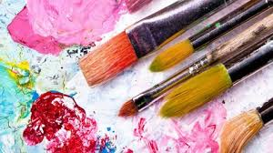

Profesora: Luis Flores
unidades de credito: 0 u/c
código de materia: ACT-12030
salón: piso 3/15
horas a la semana: 2
descripción: Las artes plásticas son aquellas manifestaciones del ser humano que reflejan, con recursos plásticos, algún producto de su imaginación o su visión de la realidad. Esta rama artística incluye trabajos de los ámbitos de la pintura, la escultura y la arquitectura, entre otros. No obstante, tampoco podemos pasar por alto el que también son consideradas artes plásticas otras disciplinas tales como la fotografía, la joyería, la alta costura, la cerámica o el grabado. Las artes plásticas materializan una representación de la realidad o una visión imaginaria. El proceso de creación contempla la búsqueda de materiales y técnicas que permitan al artista que su intención sea fielmente reflejada en su obra.
